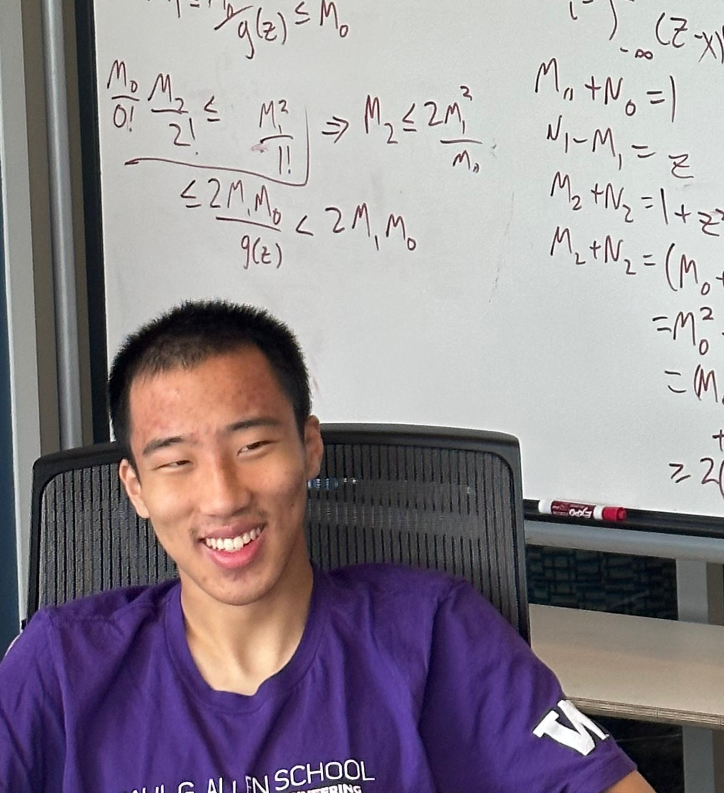

I am a second year PhD student in Computer Science at the Georgia Institute of Technology, in the Algorithms, Combinatorics, and Optimization program. I am fortunate to be advised by Jan van den Brand.
Previously, I was an undergrad at the University of Washington and worked with Shayan Oveis Gharan.
My research interests lie broadly in convex optimization, combinatorial optimization, and theoretical computer science. I particularly like the analysis of interior point methods.